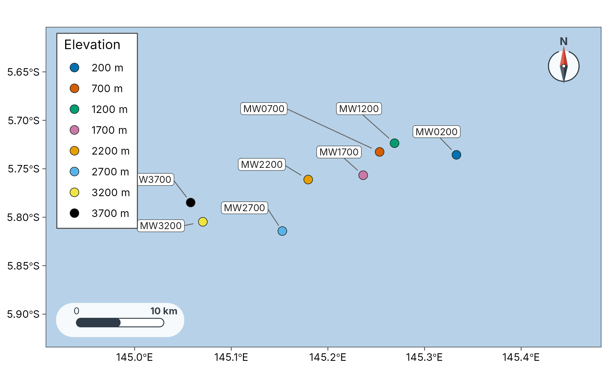

Tutorials
tutorials.RmdThe tutorials run a whole mapping workflow on published Papua New Guinea data shipped with tidydiversity. Each tab gives a short preview; follow the link for the full analysis.
Papua New Guinea
Ground ants at baits along the Mt Wilhelm elevational gradient
(png_ants; Moses et al. 2023): site map, richness on a map
and distance decay. Full
tutorial.
sites <- geo_example_sites("wilhelm")
plot_sites(sites, lon, lat, colour = elevation_band, label = site, basemap = "coast")
#> Warning: No Natural Earth land data available; install rnaturalearth.
#> ℹ Returning an empty land layer. Pass `coastline` or use a tile basemap.